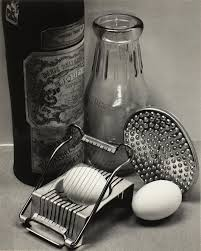
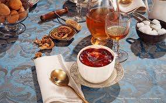
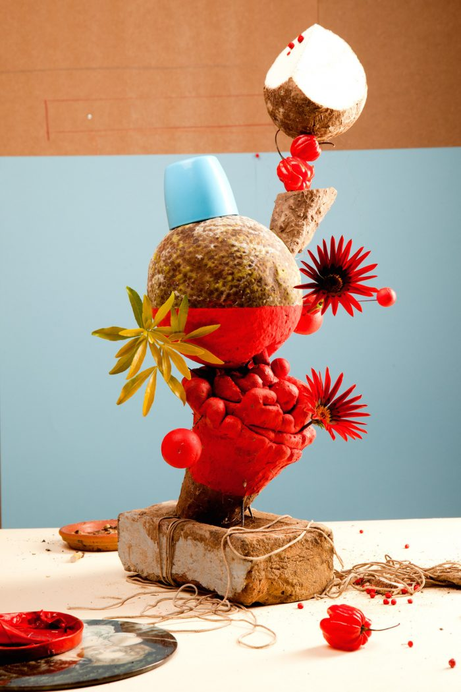

Art+Photography
3 Visually Engaging Cookbooks
7 February 2018 / by Admin


1. The Photographer’s Cookbook published by Aperture In the late 1970s, the George Eastman Museum approached a group of photographers to ask for their favorite recipes and food-related photographs to go with them, in pursuit of publishing a cookbook. Playing off George Eastman’s own famous recipe for lemon meringue pie, as well as former director Beaumont Newhall’s love of food, the cookbook grew from the idea that photographers’ talent in the darkroom must also translate into special skills in the kitchen. And – the recipes do not disappoint, making this book as delicious on eyes as it is on the palate.

2. We eat with our eyes. People love to stage and take photos of their food. Driven by Instagram and the advertising industry, stylists, gourmandizers, and photographers continually invent new ways of presenting food as both delectable and radical. Visual Feast presents work nonpareil from this growing scene.
Sharing photos of food has become entrenched in our daily lives. Visual Feast celebrates the interplay between a myriad of styles: maps created from vegetables, lobsters painted gold to adorn tables, jelly molded into witty dishes. These images can be readily found on social media, in magazine editorials, or transformed into infographics.

3. Feast for the eyes published by Aperture
From basic sustenance to savory repasts, food awakens the senses and touches both private and public life. It can be political, religious, aspirational, commercial, creative, symbolic, national, and regional. Food’s complexity of form and meaning—and the fact that it’s often at hand—have made it a much-photographed subject throughout the history of photography. Interest in both food photography and food as a subject has risen in recent years, and this is the first book to cover food photography’s rich history—not only in fine art photography, but also in crossover genres such as commercial and scientific photography and photojournalism. Susan Bright’s introduction and commentary accompanying the photographs bring insight and intelligence to this spectacular subject, and trace the progression of the genre from photography’s beginnings to present day, featuring artists from all eras—Roger Fenton, Nickolas Muray, Edward Weston, Irving Penn, Stephen Shore, Laura Letinsky, Wolfgang Tillmans, Nobuyoshi Araki, and Martin Parr, to name a few.